Vivimos en un momento crucial de la historia humana donde hablar del medio ambiente no representa un ejercicio decorativo ni un eslogan pasajero, sino una urgencia vital. En el marco del Festival Ecológico del Colegio Británico de Bolivia, nuestro equipo de redacción e investigación fija su mirada en Costa Rica, una nación centroamericana cuyo modelo de desarrollo sostenible ofrece respuestas palpables al calentamiento global.
Ocupando escasamente el 0.03% de la superficie continental de la Tierra, Costa Rica resguarda casi el 6% de toda la biodiversidad conocida. Esta abundancia de vida silvestre no es fruto del azar: es la consecuencia de más de medio siglo de políticas de Estado serias, fundamentadas en el rigor científico y el respeto irrestricto por los ecosistemas naturales.
A diferencia de economías basadas en la extracción de combustibles fósiles, Costa Rica transformó sus bosques en reservas biológicas. El país consolidó el Sistema Nacional de Áreas de Conservación (SINAC) y respaldó a instituciones científicas de prestigio continental como el CATIE.
Por más de ocho años consecutivos, más del 98% de la electricidad producida en Costa Rica proviene de fuentes renovables (agua, calor volcánico, viento y radiación solar).
Para nuestra comunidad educativa en Bolivia, este horizonte es una hoja de ruta práctica que nos invita a transformar los hábitos de consumo en nuestras aulas y hogares.
La posición de Costa Rica como puente biológico entre América del Norte y del Sur dio origen a una concentración de vida irrepetible. Cada especie desempeña un papel irremplazable: desde la polinización de flores selváticas hasta el control biológico de plagas que protegen la estabilidad de las selvas y los cursos de agua dulce.
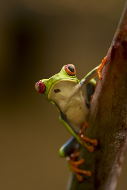
Adaptación defensiva: Sus enormes ojos rojos producen un reflejo de sobresalto visual que desconcierta a depredadores nocturnos. Posee ventosas digitales adhesivas para trepar el dosel húmedo.
Rol ecológico: Su piel permeable absorbe oxígeno y humedad; ante la menor polución acuífera o sequía, su población disminuye alertando de inmediato a los biólogos.
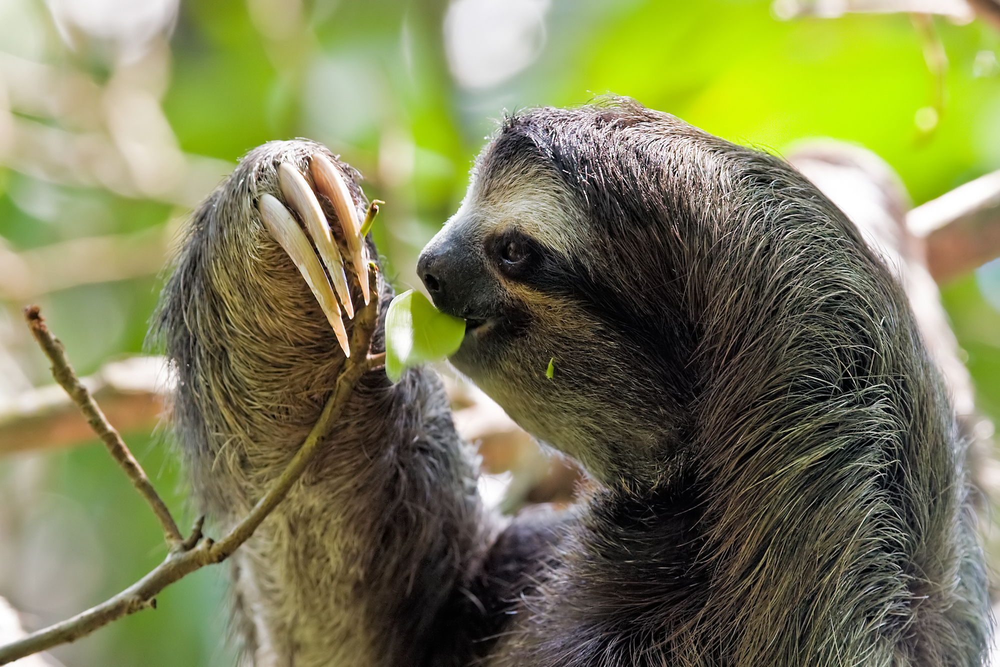
Metabolismo adaptativo: Su lentitud extrema minimiza el consumo calórico al alimentarse de hojas fibrosas de difícil digestión en las copas de los árboles selváticos.
Simbiosis única: En su pelaje crecen micro-algas clorofíceas que le otorgan camuflaje verdoso frente a águilas harpías, conviviendo con polillas que abonan dicho microecosistema.
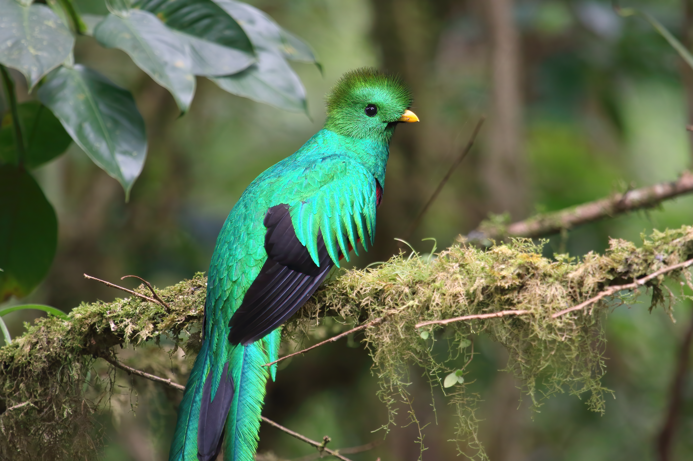
Cortejo y morfología: Habita las cumbres frescas de Monteverde y Talamanca. Durante el cortejo, el macho despliega plumas caudales que superan el metro de longitud.
Ingeniero forestal: Consume frutos de aguacatillo silvestre y regurgita las semillas intactas lejos del árbol matriz, reforestando de manera natural la selva de niebla.
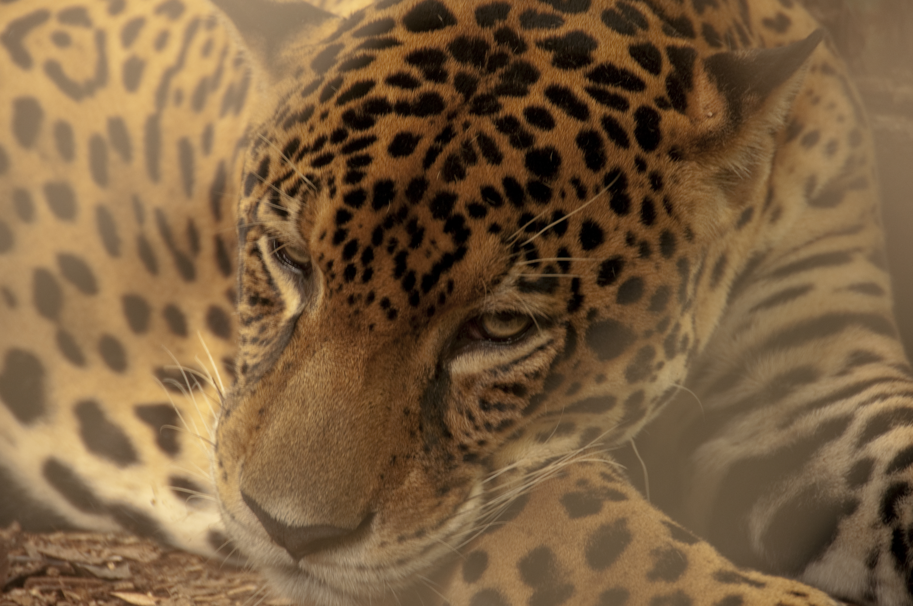
Santuario Corcovado: El mayor felino de América halla en la Península de Osa una de las densidades poblacionales más estables del continente, libre de caza y deforestación.
Especie paraguas: Como depredador ápice, regula poblaciones de herbívoros (pecaríes y venados), preservando la cobertura vegetal y las nacientes de agua dulce.
Las especies requieren desplazarse libremente para alimentarse y reproducirse sin consanguinidad. Costa Rica consolidó franjas verdes conectivas entre parques nacionales y fincas privadas mediante el Pago por Servicios Ambientales (PSA), permitiendo el cruce seguro de felinos, anfibios y aves.
Densidad biológica sin igual: En un solo árbol maduro de ceiba o guácimo en la estación La Selva de Sarapiquí se han catalogado más de 40 especies de hormigas y 150 variedades de escarabajos, superando la riqueza entomológica de países europeos enteros.
Lejos de representar únicamente una fuerza destructiva, el vulcanismo en Costa Rica es la fragua que dio nacimiento a la tierra y enriqueció sus suelos durante milenios. Los minerales expulsados por las entrañas terrestres nutren la flora más exuberante y proveen energía geotérmica constante, limpia y soberana.
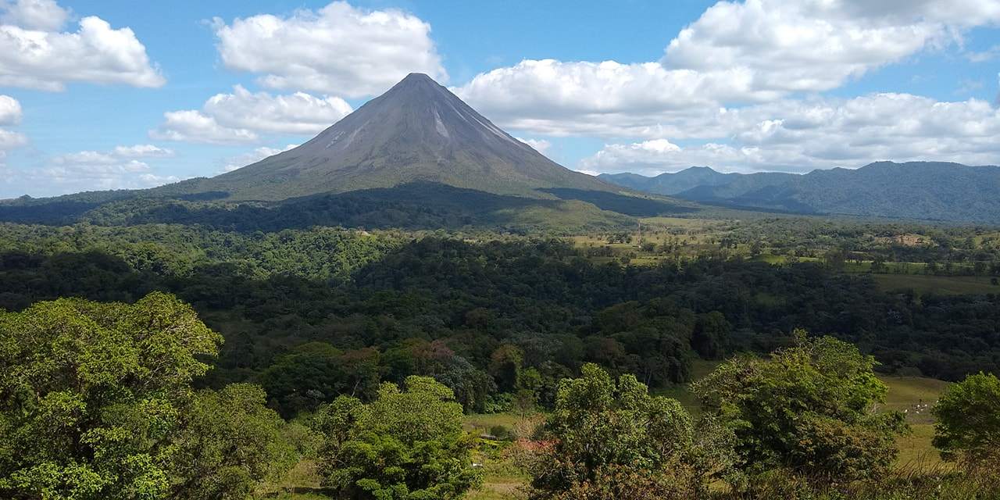
Morfología perfecta: Su cono casi geométrico surgió hace unos 7,000 años. Tras su ciclo activo histórico, hoy se monitorea como laboratorio vivo y polo ecoturístico termal.
Aporte hídrico: Sus laderas alimentan el embalse del Lago Arenal, pieza angular que genera más del 17% de la energía hidroeléctrica limpia de Costa Rica.
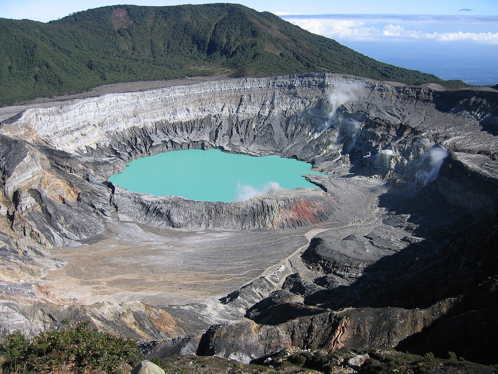
Cráter colosal: Alberga una de las calderas abiertas más anchas del planeta (1.32 km). Su laguna sulfurosa de color turquesa cambiante presenta un pH ácido extremo (< 1).
Análogo espacial: Científicos de la NASA y la UCR analizan sus bacterias extremófilas para descifrar posibles vestigios de vida temprana en el Marte volcánico.
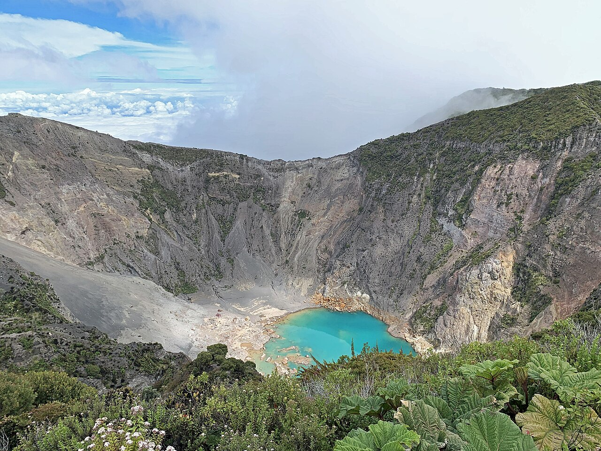
Cumbre de dos mares: Es el volcán más elevado del territorio. En amaneceres diáfanos, su cima permite contemplar simultáneamente el Mar Caribe y el Océano Pacífico.
Fertilidad andisol: Sus lluvias históricas de cenizas fertilizaron el Valle de Cartago con minerales preciosos, conformando el granero agrícola de hortalizas del país.
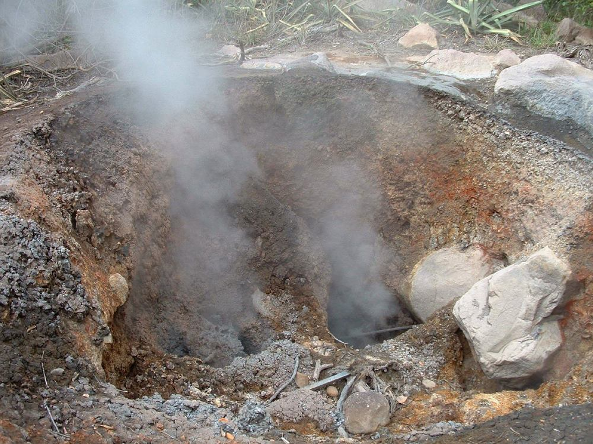
Caldera viva: Despliega el complejo hidrotermal más vigoroso del país: pailas de barro hirviente, solfataras y respiraderos de vapor que brotan directamente del suelo selvático.
Pilar geotérmico: En sus faldas operan las plantas Las Pailas y Borinquen del ICE, transformando el calor subterráneo en energía firme las 24 horas sin emitir carbono.
A diferencia del gas o carbón, la geotermia aprovecha el calor volcánico profundo para generar electricidad firme 24/7 sin combustión ni chimeneas contaminantes, operando en un circuito 100% cerrado y renovable:
El magma a 2,000 m sobrecalienta acuíferos confinados a temperaturas de 240°C a 300°C.
El fluido asciende por tuberías selladas hacia separadores ciclónicos que aíslan el vapor puro.
La fuerza del vapor mueve turbogeneradores produciendo electricidad limpia inyectada al Sistema Nacional.
El vapor condensado en líquido se reinyecta al subsuelo mediante pozos profundos, recargando el manto.
Pocos lugares en el globo terráqueo albergan un encuentro tan íntimo entre la selva pluvial y las olas marinas. Los litorales costarricenses, divididos entre el Caribe y el Pacífico, constituyen guarderías esenciales para especies marinas en peligro crítico de extinción y barreras naturales protectoras frente al cambio climático.
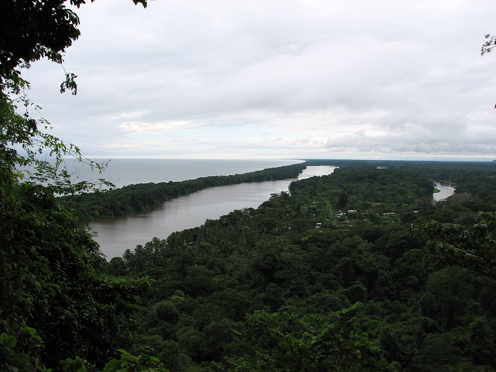
Santuario del desove: Es el enclave de anidación más relevante de todo el hemisferio occidental para la tortuga verde (Chelonia mydas). De julio a octubre, miles de hembras retornan con precisión milimétrica a su playa natal.
Laberinto biológico: Su red de lagunas y caños navegables comunica la selva costera con el mar, albergando manatíes, jaguares y caimanes en un ecosistema sin carreteras terrestres.
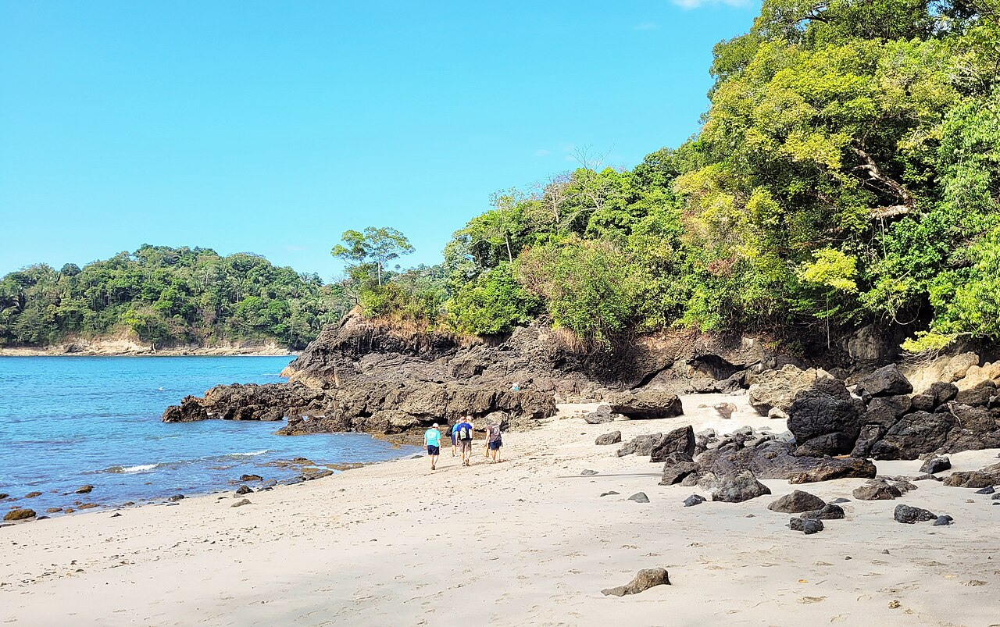
Encuentro selva-mar: Famoso por sus ensenadas de arena blanca y su tómbolo arenoso en Punta Catedral. Monos tití cariblancos (Saimiri oerstedii) e iguanas transitan ramas sobre la marea alta.
Arrecife y educación: Sus calas protegidas albergan arrecifes coralinos someros y senderos pedagógicos que muestran cómo el ecoturismo regulado financia la conservación a perpetuidad.
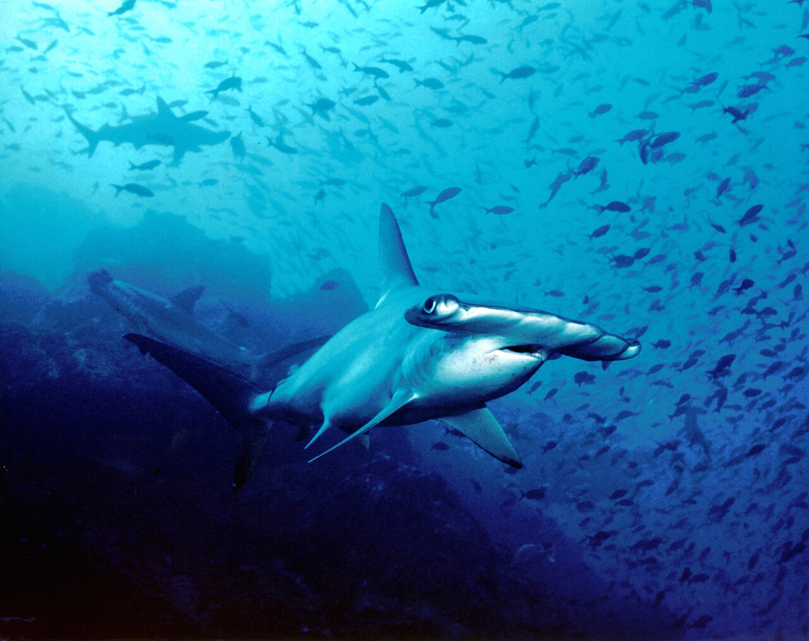
Capital del tiburón martillo: Ubicada a 550 km de la costa continental, esta cumbre submarina acoge congregaciones masivas de tiburón martillo cornudo (Sphyrna lewini), mantas gigantes y delfines.
Estación oceánica nodal: Es el corazón del Corredor Marino del Pacífico Este Tropical (CMAR), permitiendo que peces pelágicos y tortugas laúd migren a salvo de flotas pesqueras industriales.
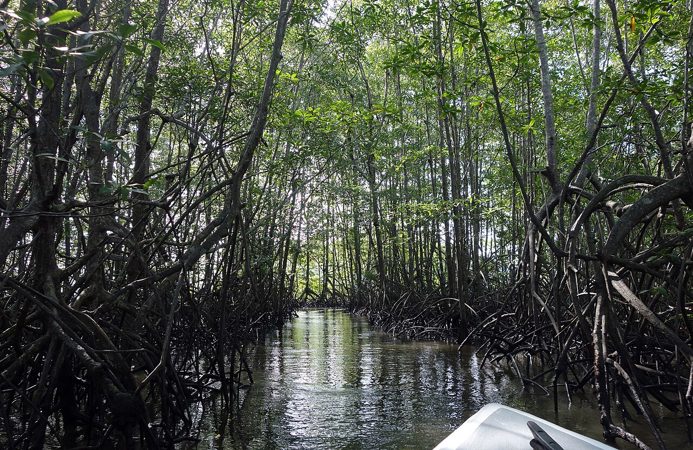
Cuna marina y filtro: El manglar más extenso de Centroamérica. Sus raíces sumergidas zancudas protegen bancos de alevines, moluscos y peces comerciales antes de nadar a mar abierto.
Baluarte de carbono azul: Secuestra hasta cinco veces más carbono por hectárea que los bosques terrestres maduros y neutraliza la fuerza destructiva de marejadas y temporales oceánicos.
Los arrecifes de Cahuita y Golfo Dulce albergan más del 25% de la biodiversidad marina. Mediante viveros comunitarios, biólogos del SINAC cultivan fragmentos de coral para regenerar barreras dañadas por el cambio térmico.
En Tortuguero y Ostional, guardaparques y escolares patrullan las arribadas nocturnas de tortugas baula y verde. La educación ambiental transformó el saqueo de nidos en un modelo de monitoreo científico y ecoturismo regenerativo.
La conservación de la naturaleza no significa levantar un muro infranqueable para alejar al ser humano, sino investigar cómo producir alimentos nutritivos sin degradar los suelos. En esta misión, Costa Rica ha brindado al mundo instituciones científicas que lideran la transición ecológica en las Américas.
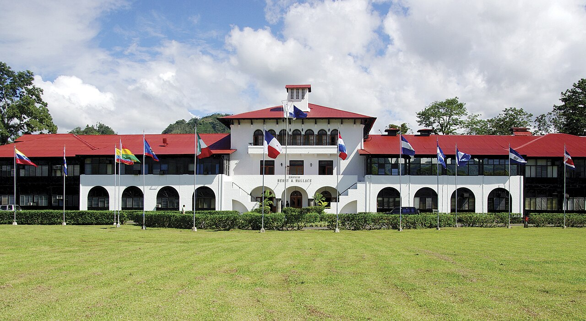
Alianza educación-tierra: Con sede en Cartago, combina investigación agronómica con maestría y doctorado. Ha graduado a más de 2,800 líderes ambientales de América Latina, incluyendo profesionales bolivianos.
Desarrollo regenerativo: Sus campos experimentales demuestran que la rentabilidad de las familias campesinas coexiste plenamente con la biodiversidad y la captura de carbono.
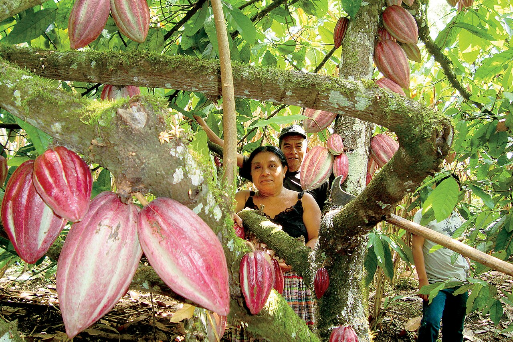
Reserva genética mundial: Custodia más de 1,200 clones de cacao y una de las colecciones vivas de café silvestre más ricas del planeta, resguardando genes resistentes a plagas y sequías.
Seguridad alimentaria: Ante la crisis climática, sus científicos reproducen y distribuyen variedades tolerantes que prosperan sin necesidad de agroquímicos sintéticos destructivos.
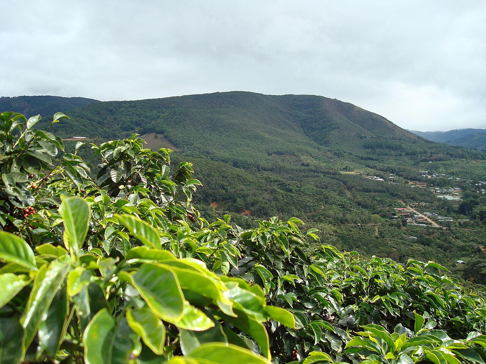
Cultivo con dosel protector: La agroforestería integra árboles maderables nativos (como laurel y poró) sobre cafetales. La hojarasca fertiliza el suelo y reduce la evaporación del agua.
Refugio de polinizadores: Este dosel provee corredores biológicos para aves migratorias e insectos benéficos, erradicando la necesidad de talar selvas para cultivar.
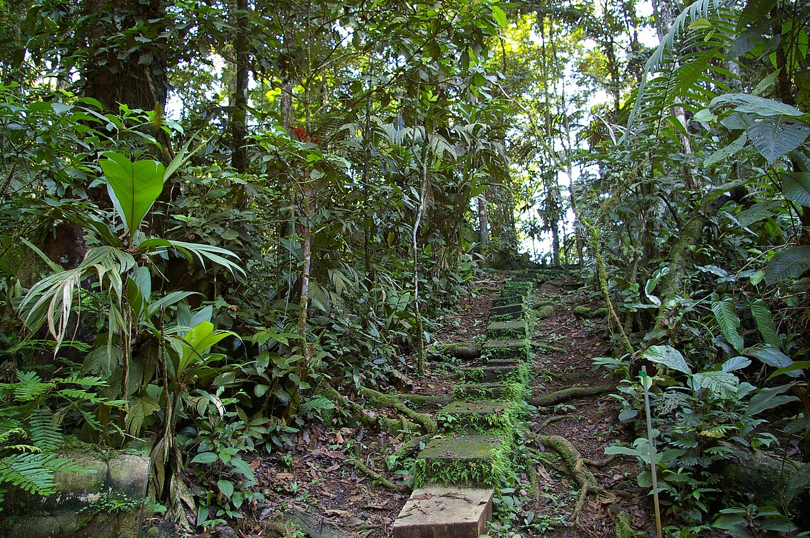
Epicentro de investigación: Administrada por la Organización para Estudios Tropicales, genera más de 100 publicaciones científicas al año sobre dinámica del carbono, dosel y botánica selvática.
Formación de campo: Más de 250 universidades mundiales envían anualmente investigadores a sus senderos, consolidando a Costa Rica como la gran aula ecológica del planeta.
El CATIE diseñó un modelo de producción estratificada en 4 niveles que permite cosechar alimentos de alto valor mientras restaura cuencas hidrográficas y captura carbono:
Especies nativas (cedro, laurel) que capturan carbono y amortiguan la fuerza de lluvias tropicales.
Arbustos productivos que maduran bajo sombra fresca desarrollando aroma y cuerpo superior.
Leguminosas y hojarasca que fijan nitrógeno natural y nutren la microbiota del suelo sin agroquímicos.
Riberas reforestadas que filtran sedimentos y blindan nacientes de agua pura para las comunidades.
El Sistema Nacional de Áreas de Conservación divide el país en 11 regiones donde guardaparques y familias rurales custodian reservas biológicas. Este esquema convirtió a antiguos cazadores en guías naturalistas y protectores de la fauna.
Mediante becas internacionales, el CATIE forma agrónomos e ingenieros forestales de Bolivia y la región. Al retornar a sus naciones, estos profesionales replican modelos de cuencas sostenibles y agricultura regenerativa adaptada a sus propios valles y selvas.
Aprender sobre la biodiversidad de Costa Rica cobra auténtico sentido cuando ese conocimiento se traduce en hábitos concretos dentro de nuestras aulas, pasillos y hogares en Bolivia. Bolivia también es un país megadiverso —con su Amazonía, sus Yungas y su Chiquitanía— que demanda la misma entrega ética de sus estudiantes.
Utiliza botellas térmicas y fiambreras lavables. Di "no" a pajillas y bolsas descartables en meriendas.
Deposita papel, cartón limpio, latas y plásticos secos en los contenedores escolares correspondientes.
Inspirados en el CATIE, transformemos cáscaras de fruta de refrigerios en tierra fértil para el colegio.
Cierra el grifo mientras te jabonas las manos en los sanitarios del colegio y reporta fugas de agua.
Aprovecha la luz solar abriendo cortinas; apaga luces y proyectores al salir a los descansos.
Respeta y no espantes a las abejas, mariposas y colibríes que visitan las flores de nuestros patios.
Promovamos sembrar árboles autóctonos (como queñuas y kiswaras) que capturen carbono en las ciudades.
Cuida tus cuadernos, uniformes y libros escolares para darles la mayor vida útil posible.
Investiga en fuentes verídicas y huye de bulos o noticias falsas sobre el medio ambiente.
Comparte estos hábitos con tus padres y amigos: cuidar el planeta es una tarea cotidiana.
Con solo 51.100 km², alberga el 5% de la biodiversidad del planeta. Protege más del 28% de su territorio bajo el SINAC, opera con un 98% de electricidad renovable y lidera la ciencia agroforestal desde el CATIE, demostrando que la naturaleza es motor de bienestar social.
Con 1.098.581 km², figura entre los 15 países más ricos en vida biológica del orbe. Reservas insignes como el Madidi y Noel Kempff Mercado sustentan la Amazonía y los Andes. Aplicar en nuestras escuelas el compostaje y la reforestación nativa es el puente para defender este legado.
“La educación ambiental no consiste en enseñar datos fríos, sino en encender la devoción por la vida. Cada árbol cuidado en Bolivia y cada cuenca protegida en Costa Rica forman el mismo latido continental.”